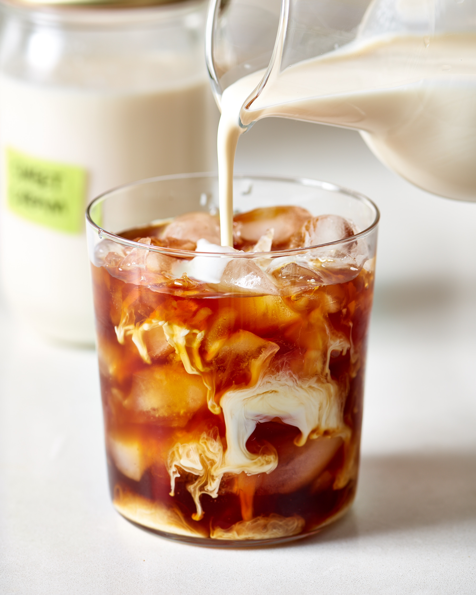

Description
The only drink I order from Starbucks anymore. Love the richness
from the cream, which I don't get from the lattes.
Ingredients
- 2/3 cup of cold brew concentrate (I prefer Chameleon cold brew)
- 1/3 cup of water
- 3 tbsp of heavy whipping cream
- 2 tbsp of vanilla syrup
- 2 tbsp of milk
- ice
Steps
- Pour the heavy whipping cream, vanilla syrup, and milk
into the your glass and stir until combined.
- Pour the cold brew and water into your glass.
- Add as much ice to your liking in your glass.
- Stir until it's all one color.
- Sip and enjoy!
